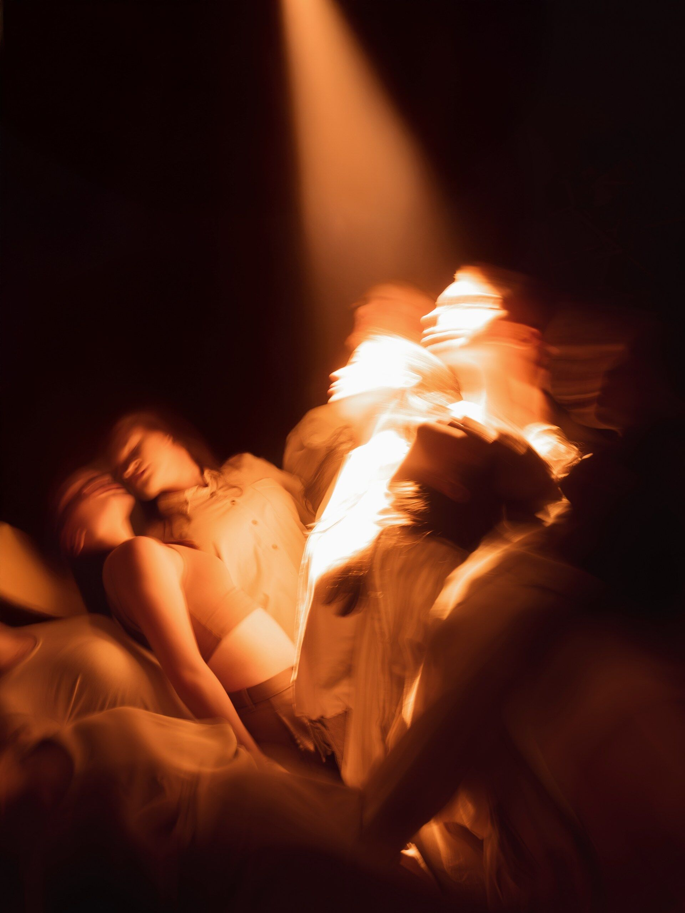
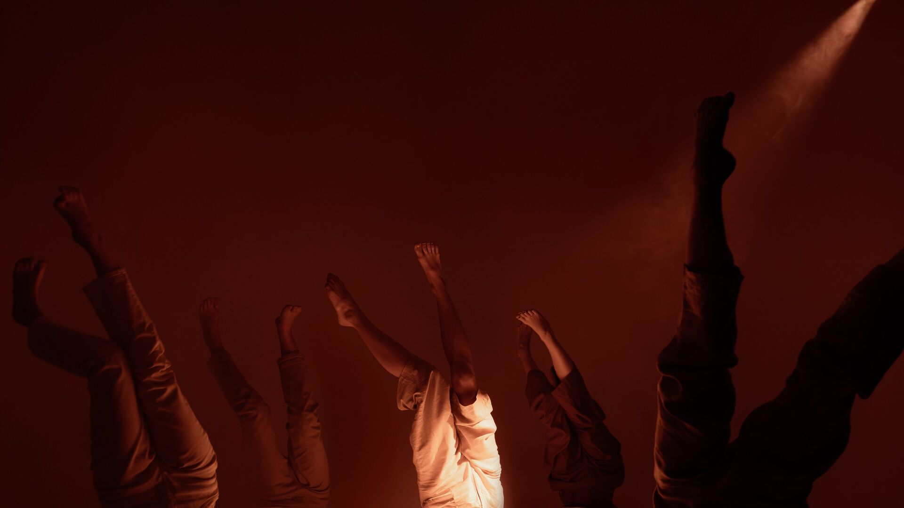
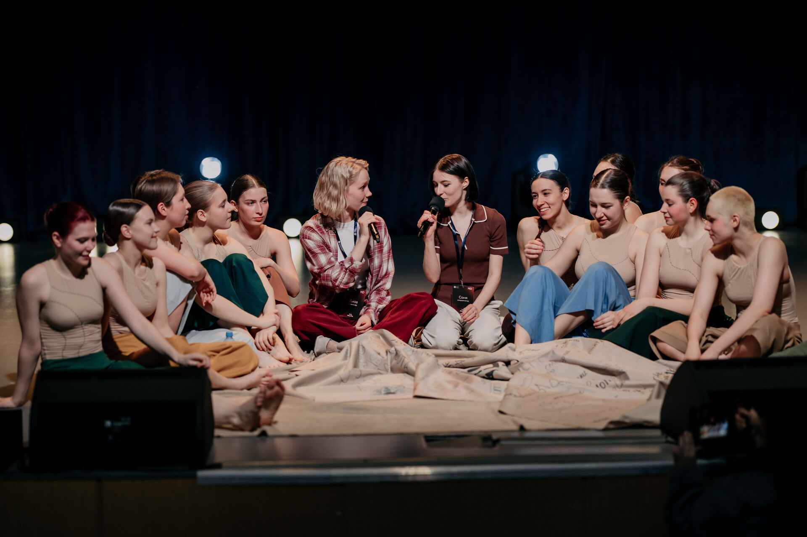

Проект, который студентам действительно нужен
«На ощупь» — это пластический спектакль о том, как двигаться, когда пути не видно
Быть студентом — это когда многое впервые. Наш спектакль — это история о студенчестве как о большом переходе.
Из одного города в другой. Из детства во взрослую жизнь. Из представлений о себе и мире — в реальность, которая часто оказывается сложнее и интереснее любых ожиданий.
Это постановка в стиле Contemporary, которая говорит на языке танца о том, что порой тяжело сказать вслух. Это история как напоминание, что даже в неуверенности и тревоге мы не одиноки. Можно идти на ощупь — без плана, без гарантий, но с желанием двигаться дальше.
На премьере в ВШЭ люди приходили, смотрели, оставались после спектакля и говорили, что узнали себя на сцене. Это не просто театр — это точка, где студенты чувствуют, что они не одни в своих сомнениях.
Мы готовы привезти это в ваш университет и создать пространство для доверительного, безопасного и комфортного диалога со студентами.


Что произошло на первом показе
В апреле 2026 года состоялась премьера спектакля на сцене Культурного центра ВШЭ. Пришли 300+ человек из 25+ факультетов. После спектакля люди не уходили — оставались на получасовую дискуссию с командой спектакля и задавали вопросы, делились своим опытом, плакали, смеялись.
Мы провели четыре открытых мастер-класса, встречи с психологами, рефлексивные круги. 70 человек записались на дополнительные события. Люди приходили повторно, потому что это действительно было про них — про их жизнь, их сомнения, их смелость.

Что вы получаете
Адаптация первокурсников и иностранных студентов
Спектакль о переходе и поиске себя. Он помогает тем, кто только осваивается в новом городе, вузе и языке, почувствовать, что они не одни.
Внеучебная вовлеченность
Событие, на которое студенты приходят сами. На премьере собрались 300+ человек с 25+ факультетов — показатель того, что это работает.
Психологическое благополучие
Разговор о тревоге, неуверенности и выгорании на понятном студентам языке. После спектакля зрителям предлагается остаться на дискуссию с командой спектакля, мы создаем пространство для рефлексии. На премьере это получило очень сильный отклик.
Готовый продукт под ключ
Спектакль полностью готов: опытная команда, отработанная постановка, сопровождение. От вуза нужны только сценическая площадка, пара дней и базовая техника.
Как это работает
Что нам нужно
- • Сценическая площадка на 150+ человек
- • 1-2 дня для репетиций на вашей площадке
- • Свет, звук, сопровождающая техническая команда
- • Информационная поддержка - чтобы рассказать об этом вашим студентам
Как выглядит вечер
- 50 минут спектакля
- 20–30 минут разговора со зрителями
- + Опционально: открытый мастер-класс на следующий день